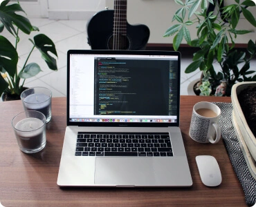
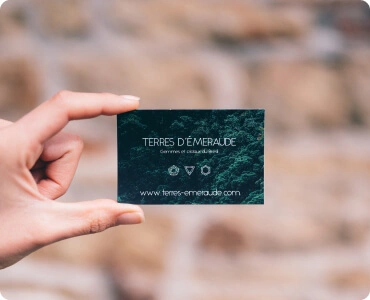

Контентні зображення
Зображення з великим розширенням, найчастіше, може використовуватись як фон, або як частина слайдеру.
Перед використанням у верстці, зображення потрібно скачати на коп'ютер в потрібному форматі. Найкращий формат растрового зображення для верстки - це webp, якщо він не доступний, то обираємо jpg або png.

Після скачування, зображення потрібно зтиснути, щоб воно мало меншу вагу, та швидше завантажувалось на сторінці. В інтернеті є багато різних сервісів котрі виконують цю функцію, я ж використовувавTiny Png.
Після зтиснення зображення можуть трішки втрачати свою якість, та стають легші на 30-40%, що дозволяє браузеру швидше їх завантажувати.
Стиснуті зображення в форматі jpg, png потрібно конвертувати в формат webp і вже після конвертації їх можна використовувати в верстці. Для проведення цієї операції я використовував сервіс Convertio
Також до контентних зображень можна віднести і векторні зображення які доповнюють або підкреслюють контент.